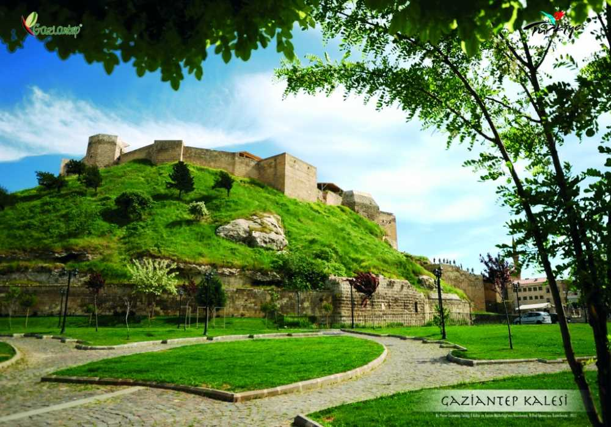
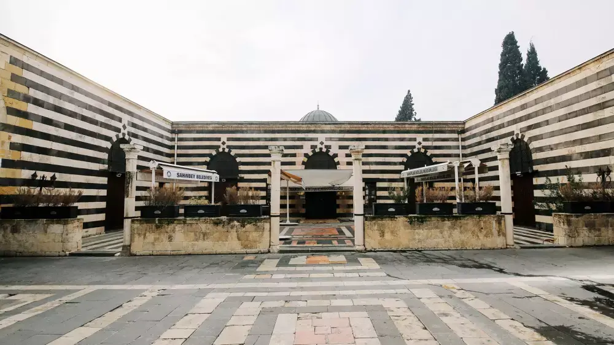
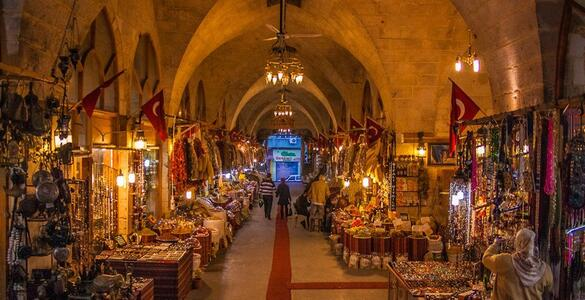
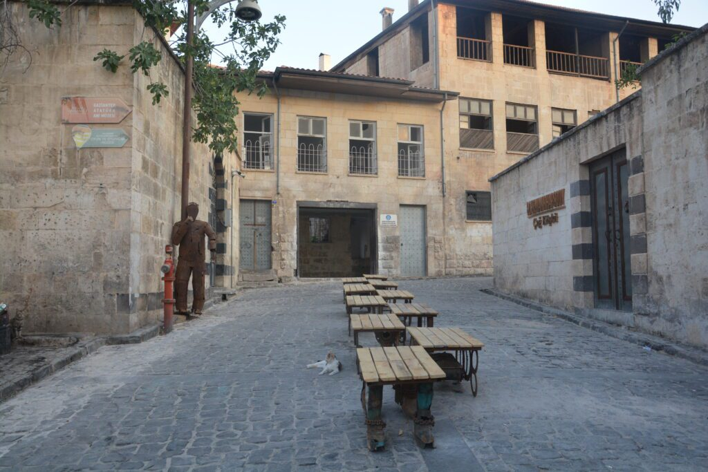
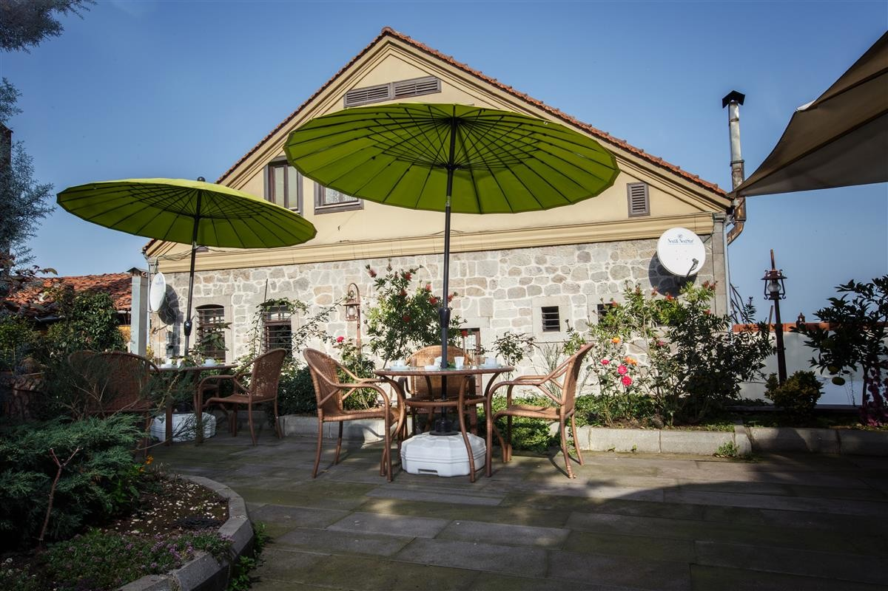
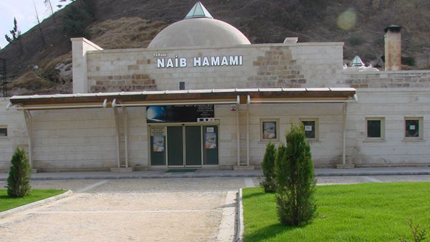

Roma döneminde gözlem kulesi olarak inşa edilen Gaziantep Kalesi, şehrin merkezinde tüm görkemiyle yükselir. İçinde Kurtuluş Savaşı Kahramanlık Panoraması yer alır.
Adres: Seferpaşa Mah., Şahinbey/Gaziantep
Ziyaret: Geçici olarak restorasyonda olabilir
Giriş: Ücretsiz

1211 yılında inşa edilen Boyacı Camii, Anadolu’daki en eski camilerden biridir. Taş işçiliği ve sade mimarisiyle huzur verir.
Adres: Şehitler Cd., Şahinbey/Gaziantep
Ziyaret Saatleri: Gün boyu (namaz saatleri dışında)
Giriş: Ücretsiz

17. yüzyılda inşa edilen bu kapalı çarşı, el işi ürünler ve baharat kokularıyla doludur. Geleneksel alışveriş deneyimi sunar.
Adres: Karagöz Mahallesi, Şahinbey/Gaziantep
Ziyaret Saatleri: Her gün 09:00 – 19:00
Giriş: Ücretsiz

Restorasyonla hayat bulan tarihi evleri ve taş sokaklarıyla nostaljik bir yürüyüş deneyimi sunar. Gaziantep’in kültürel ruhu burada yaşar.
Adres: Bey Mah., Şahinbey/Gaziantep
Ziyaret: Gün boyu gezilebilir
Giriş: Ücretsiz

Gaziantep’in geleneksel mimarisini yansıtan bu konak, sergi ve kültürel etkinliklere ev sahipliği yapar.
Adres: Eyüpoğlu Mahallesi, Şahinbey/Gaziantep
Ziyaret: Müze kapsamında gezilebilir
Giriş: Ücretsiz

Türk hamam kültürünü yaşatan bu yapı, 17. yüzyıldan günümüze ulaşmış nadir hamamlardandır. Ziyaret veya hizmet amaçlı kullanılabilir.
Adres: Eski Saray Cd., Şahinbey/Gaziantep
Giriş: Ücretli (hamam kullanımına göre değişir)